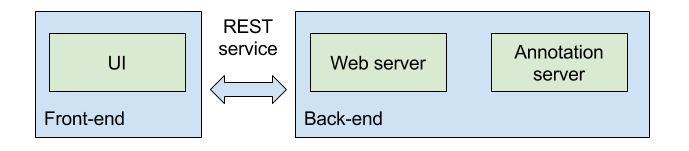

A web interface for the Content Annotation Manager
Internship at Mondeca
A presentation by Alessandro Menduni
Combining knowledge with content
- Mining
- Annotating
CAM
A web application and an annotation system
Features in brief:
- Trigger annotation
- Display results
- Manual review
- Troubleshooting
Why a UI?
to enable humans making use of this knowledge
to enable non-tech people reviewing the results
What are the challenges?
UX / data visualization
Difficult task
It's useful but not (yet) usable
THE PROBLEM
There exist an "old" CAM
Demo-only
Not meant to be "used"
Goals
A dashboard for quick overview
The human indexer
Cool demos now, a real tool tomorrow
THE SOLUTION: DESIGN
THE SOLUTION: IMPLEMENTATION
Architecture
Back-end new features
Asynchronous annotation
Parallelism
Results caching
Progress tracking
Future work
Persistence
Will open up to new possibilities:
- Resume suspended activities
- Long-term statistics
Smart disambiguation
Why delegating it to the user?